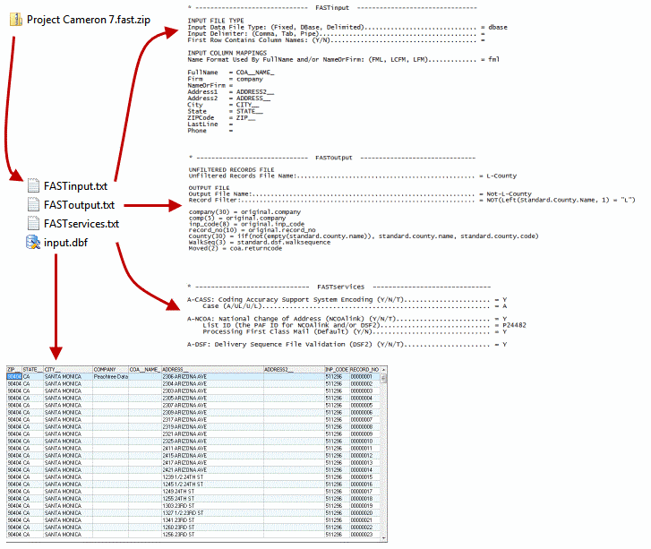

How to Prepare and Submit a FAST Job¶
The bulk of this document is mostly reference details, so don’t let the size of it fool you: FAST jobs are really easy to prepare and submit, and you’ll be a pro in no time. FAST can do a lot, so the documentation has to contain all the details of what it can do, but most of what you’ll need to know for the majority of jobs is extremely basic.
FAST in a Nutshell¶
Beside the data file you send us for processing, you will also need to send us files that specify what you want us to do and how you want us to do it. These are simple text files containing phrases our FAST system uses as its processing instructions.
The first of these files is FASTservices.txt, which tells us which services you want processed on your data file.
The second is FASTinput.txt, which describes the format of your data file to our FAST system.
The third is FASToutput.txt, which tells us how you want your output file or files to be formatted and populated.
You prepare the job by creating a ZIP file that contains your data input file plus these FAST specification files. The ZIP you send to us will have the following file naming convention: YourReference.fast.zip. Where YourReference will become the Purchase Order number that is referenced during our billing process.
You submit the job by sending it via your SecureFTP account to our processing server.
Once your job is finished processing you will receive notification via an email containing a link to download the job.
If we have any problems with any part of your job then we will contact you via email.
That’s FAST in a nutshell. The details of the process are very straightforward, too, so please take a few moments to read through the rest of this brief document and familiarize yourself with FAST job processing.
Preparing your job¶
Jobs files must follow the following naming convention: yourReference.fast.ext
- yourReference : Your reference number for this job, up to 30 characters of numbers, letters or spaces.
- fast : literal string
.fast., can’t be change - ext : the extension jobs file type, see below
Example: Assume your reference number was 123456, and you were sending a ZIP compressed file.
The job file name would be 12345.fast.zip
Job Files¶
Note
Job files must end in one of the following .fast.zip, .fast.tar, .fast.tar.gz
FAST supports the following types of job files:
- zip
- tar
- tar & gzip
Job Files should contain the following files:
- FAST specification files (
FASTInput.txt,FASTServices.txt, and optionallyFASTOutput.txt)- Your data file.
The compressed jobs files cannot contain folders, compressed files such as zip files or container files such as tar files.
PGP Encrypted Job Files¶
Note
PGP encrypted jobs include your PGP public key. The public key file extension must be .asc. The PGP Entryped job file must end in .fast.pgp
PGP encrypted job files contain the following files:
- FAST specification files (
FASTInput.txt,FASTServices.txt, and optionallyFASTOutput.txt)- Your data file.
- PGP Public key file (extension must be .asc)
Our FAST system supports job files that are PGP encrypted. To submit an encrypted file to FAST you will need to request our PGP public key from your sales representative.
When submitting a file to our FAST system, it must end in .fast.pgp. We will consider the portion of the PGP file name before the first period to be your customer PO number for the job. For a job file named Project Cameron 7.fast.pgp, the customer PO number would be “Project Cameron 7”.
Your PGP public key will need to be included in the PGP file you send us so the return file can be PGP encrypted and returned. Your public key must have an “.asc” extension to ensure we know which file is your PGP public key file and which file is the data file. A -output is appended to your PO number to create the output file name so the return file, based on the example above, would be called Project Cameron 7-output.pgp.
The PGP file cannot contain folders, compressed files such as zip files or container files such as tar files.
Sending your job¶
Upload your job’s file to your SecureFTP account, and Peachtree Data will do the rest. You’ll be notified via email when your job has finished processing, or if there was a problem with your job.